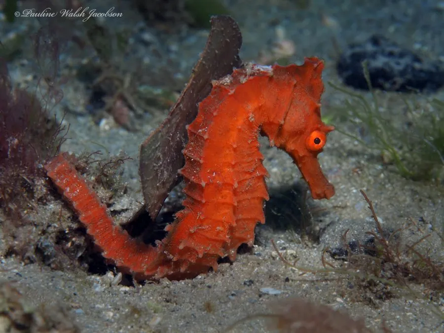

鱼类 · 动物界
线纹海马 Hippocampus erectus

将身体直立附着在海草上的海马，雄鱼腹部有育儿袋负责孵卵，因传统药用和观赏贸易而面临捕捞压力。
- 分类
- 门脊索动物门纲硬骨鱼纲目刺鱼目科海龙科属海马属
- 栖息环境
- 西大西洋沿岸的海草床、红树林根部、珊瑚礁和河口浅水区
- 地理分布
- 西大西洋，从加拿大新斯科舍、美国东岸到加勒比海和委内瑞拉沿岸
- 保护级别
- IUCN 易危（VU）；全部海马属物种列入 CITES 附录Ⅱ
物种志
线纹海马体侧扁，全身覆盖着骨板，尾部细长而可卷曲，用来缠绕海草、红树林根或珊瑚枝。吻部呈管状，头与身体成一定角度，两只眼睛可以各自独立转动。体色多变，从黄褐到深褐甚至近黑，体侧常带线状纹路，因此得名“线纹”。成鱼体长一般 10–15 cm，最大约 18 cm。
线纹海马栖息于西大西洋沿岸的海草床、红树林、珊瑚礁和河口，靠尾部缠绕固定身体，用快速摆动的背鳍缓慢移动。它没有胃，必须频繁进食，靠管状吻部吸食桡足类、小虾等小型甲壳动物。繁殖方式十分特别：雌鱼把卵产入雄鱼腹部的育儿袋，由雄鱼完成受精和孵化，约 2–3 周后产出数十至上千尾幼鱼。线纹海马因传统中药材和水族贸易被大量捕捞，加上海草床和红树林退化，种群数量下降，IUCN 将其评为易危，全部海马属物种都被列入 CITES 附录Ⅱ。
形态与习性
- 食性吸食桡足类、小虾等小型甲壳动物
- 体长一般 10–15 cm，最大约 18 cm
- 繁殖雌鱼把卵产入雄鱼育儿袋，雄鱼孵化约 2–3 周
- 产仔每胎可产出数十至上千尾幼鱼
- 寿命约 3–5 年
- 运动靠快速摆动的背鳍缓慢移动，尾部缠绕固定身体
趣味知识
- 海马是少数由雄性“怀孕”的动物，雄鱼的育儿袋负责孵化和分娩。
- 它的两只眼睛可以各自独立转动，像变色龙一样分别观察两侧。
- 海马没有胃，进食必须频繁，每天要吸食大量小型甲壳类。